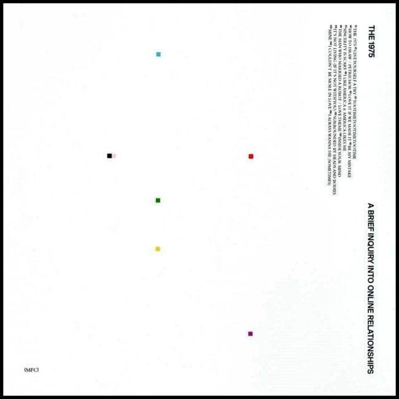

TV Girl, comprised of Brad Petering, Jason Wyman, and Wyatt Harmon, was formed in 2010. Featuring shimmering vocals and sampled beats, the self-titled debut EP of the same year turned heads online immediately; the group’s lush vintage rhythms and timeless pop hooks continued to release increasingly popular EPs and mixtapes between tours.
Cinnamon Girl - Lana del Rey
Lana Del Rey is an American singer, songwriter, and record producer. Her music is noted for its cinematic quality and exploration of tragic romance, glamour, and melancholia, with frequent references to contemporary pop culture and 1950s–1960s Americana.
It's Not Living If It's Not With You - The 1975

The 1975 is an English pop rock band formed in 2002 in Wilmslow, Cheshire. Now based in Manchester, the band consists of lead vocalist and rhythm guitarist Matthew "Matty" Healy, lead guitarist Adam Hann, bassist Ross MacDonald, and drummer George Daniel.